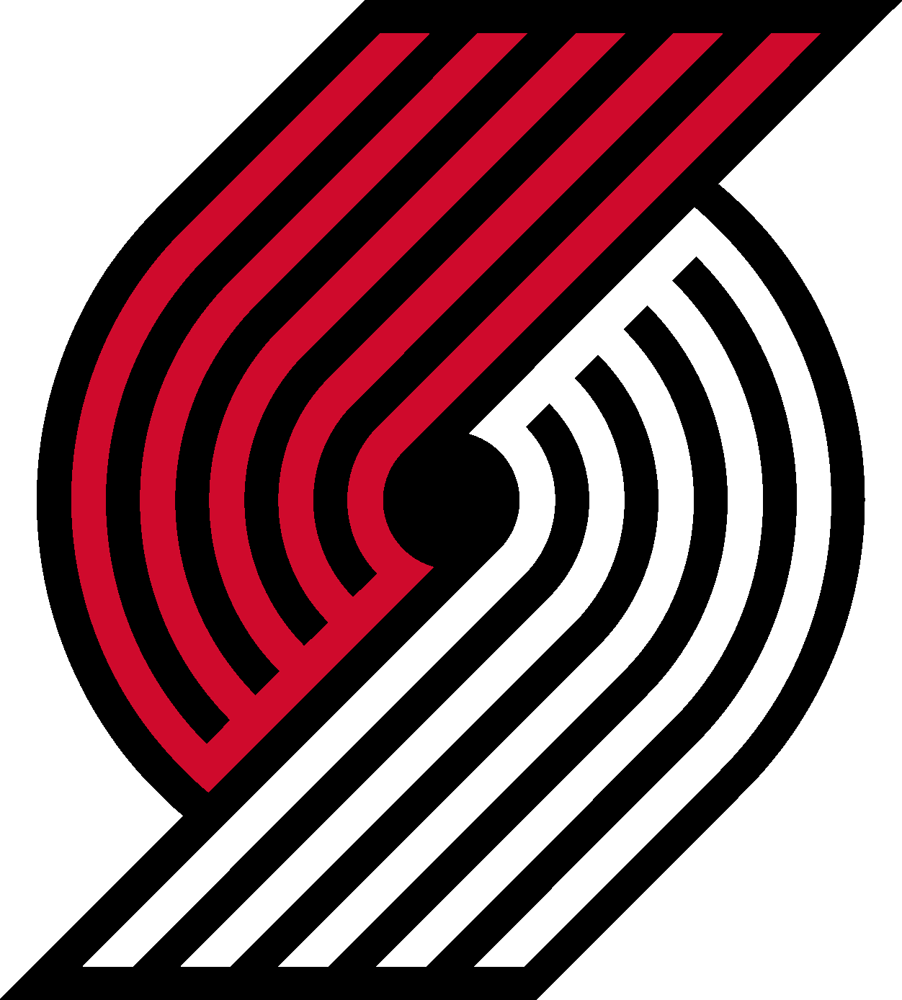
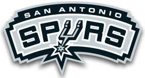
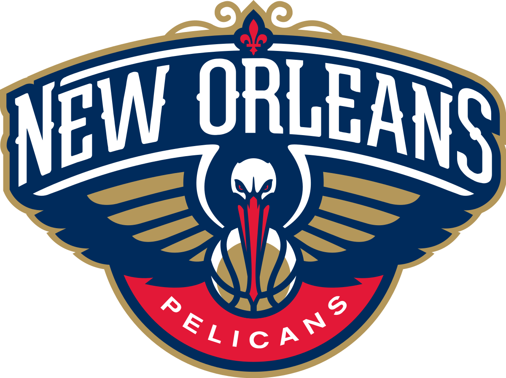
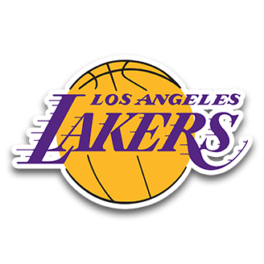
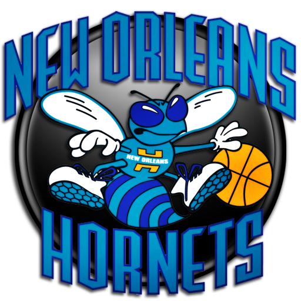

TOP 1O BASKETBALL PLAYERS OF THE DECADE
HONORABLE MENTIONS:
10. Lamarcus Aldridge
20.9 PPG 8.7 RPG 2.1 APG 1.2 BPG 50%FG (DECADE)
7 All-Stars 5 All-NBA  
From the Decade Stats, we can see there is one Important Stat line missing, 3P%. This is because throughout the Early part of the Decade Lamarcus was averaging only around 0 - 0.1 3 pointers made a game. In the 2012-2013 season he averaged only 14% from downtown. Whilst in the later seasons of the Decade he has begun to pick up his three point shooting percentages, due to trends in the NBA, at 35% in the 2019-2020 season so far, he only attempts 1.8 a game, this is significantly lower than many superstar big men today such as Embiid or Davis. Despite this lack of three point shooting throughout the decade, Lamarcus Aldridge has been a very important player for both the Trail Blazers and the Spurs. As shown by his stats he can efficiently go out an get 20 in his prime. Whilst toward the later half of the Decade, he is slowly starting to regress, Lamarcus Alridge's eFG% has gone up every season for the last three seasons, currently sitting at 53% this season. Whilst Lamarcus has been a reliable player averaging around 20 PPG ,for this decade, his lack of shooting in the early parts of the decade, his what I believe to be inadequate rebounding for a 6-11 Center/Power Forward, in comparison to other star Big Men such as Giannis, Davis, Embiid, Howard stop him from ranking higher on this all-decade list. He was also not a particulary good leader of the Portland Trail Blazers Team who only made it past the first round once with him as their star player. However his excellent defense, mid-range shot, and his ability to create offense for his team and his pretty good post game, all help him to get number 10 on the ALL-Decade List.
9.Paul George
20 PPG 6.1 RPG 3 APG 1.6 BPG 43%FG 39 3P% (DECADE)
6 All-Stars 9 All-NBA Most Improved Player (2012-2013)


Paul George is one of the best comebacks stories in the NBA. In the Summer before the 2014-2015 season, Paul George suffered a serious leg injury in a scrimmage in Las Vegas. In the 2014-2015 season, PG-13 played a total of 6 Games, averaging only 8.8 PPG on 37% from the field. Before and (for two years after) the Injury, PG played for the Indiana Pacers. The Pacers had loads of Playoff success because of Paul George and the surrounding cast. PG was able to book an Eastern Conference Finals with the Miami Heat Superteam two years in a row. Whilst PG's Pacers could never get over the Hump, they were still able to take Lebron's Heat to 7 Games in one year and 6 Games in the other year. Since the two back to back ECF appearances, PG's teams (Pacers and Thunder) have struggled to get past the first round, however this has not always been his fault. It is fair to say that Paul George has had relative Playoff success, more than most ranked under him. PG also has a wide range of skills, and very few things he cannot do. Paul George is one of the best 3&D players we have ever had in the league. His ability to knock down shots, as well as defend others is something every team needs. We can see his abilities have been regonised over the decade with 6 All-Star Selections, and 9 All-NBA Selections, alongside the 2012-2013 Most Improved Player. There are very few 6-8 Players who can knock down the three as well as PG-13. However despite his immense skill he still does have flaws. Despite dubbing himself "Playoff P" and his mostly successfull playoff history, Paul George has been known to have some very bad games over the years, which could have turned the series in favor of the opposition. Game 2 and 3 of the 2014 ECF Final vs the Heat are a great example of this. They lost both games, in part due to PG's poor shooting from the field. If PG had stepped up in these two games the Pacers may have been able to move past the Heat into the NBA Finals.
8. Anthony Davis
24 PPG 10.5 RPG 2.3 APG 1.4 SPG 2.3 BGP 52%FG (DECADE)
6 All-Stars 6 All-NBA  
Anthony Davis moving team has been one of the most talked about trade rumours in recent years before his eventual trade to Los Angeles this summer. Anthony Davis is a classic example of someone with loads of talent, but a less-talented front office. Throughout this decade, the New Orleans Pelicans, with Anthony Davis leading them, has been unable to make much noise in the playoffs, if they even reach them at all. Throughout Davis' 7 seaons with the New Orleans Pelicans (first season under the name of New Orleans Hornets), they failed to make the playoffs five times, got knocked out the first round once,and only once got to the second round (in spectacular fashion beating the one seeded Portland Trail Blazers in the First Round as the eight seed.). Whilst Anthony Davis did not always have the best teamates, I would expect having Jrue Holiday, Julius Randle, Demarcus Cousins, Eric Gordon, Tyreke Evans over the years would have led to more playoff appearances, questioning Anthony Davis' ability to lead a team. However despite his questionable leadership abiity and lack of much playoff success, Anthony Davis is an exceptional talent in the league. He was nominated for Defensive Player of the Year in 2018 showing his excellent ability on the defensive end of the floor. Whilst he is one of the best defensive player of this decade, it could be argued his Offensive game is just as good. He averaged 28 PPG in two consecutive years, and continues to be a constant double-double threat every single night. The one part of his offensive game that could use a little bit of work is his shooting and more specifically his three point shooting. He started his career attempting about 0.1 a game. In his fourth season however he started to pick up his three point shooting, attempting two a game. Ever since that season he attempts around 2-3 a game, however he has not been a very efficient three point shooter over the years at an average of around, 23.5 % 3PFG
7. Russel Westbrook
24.4 PPG 7.5 RPG 8.5 APG 1.8 SPG 43.7%FG (DECADE)
8 All-Stars 8 All-NBA Most Valuable Player (2016-2017)

Westbrook is one of the best all round Offensive players of the Decade as shown by his ability to be a nightly triple-double threat and his three consecutive seasons averaging a triple double. Those three seasons have been enough to boost Westbrook up to number 2 on the all time triple double leaderboard at 144. He also became the second person in NBA history to average a triple double, after the great Oscar Robertson. If that is not impressive enough, Westbrook is the only player to average a triple double for three consecutive seasons or just three seasons at all. His ability to get steals, playmake, score and rebound despite being only 6-3, earned him the 2016-2017 Most Valuable Player. Despite these record breaking accomplishments, there are many things that hold him back from being higher on this list. As you can tell from his Stats he is the most inefficient player on this list, at 43.7% FG aside from PG-13 (although George's effiency is distorted due to his injured season). His three point shooting efficieny isn't much better sitting at around 27% 3P, and whilst at the start of the decade he was averaging around 30-34% 3P, toward the end of the decade he is averaging around 23-29%3P which for a point guard is well below average. If his shooting continues to decline it may be more beneficial for him to stop shooting them all together. Another problem with Russell Westbrook is his lack of playoff sucess in the past three years. Whilst at the start of the Decade, the OKC Thunder made a finals appearance, two WCF appearances, a second round or two and missed the playoffs completley due to Durant only playing 27 games, in the past three years with teamates like Paul George, Steven Adams, Andre Roberson (when he is healthy), Victor Oladipo etc. the OKC Thunder has failed to get it pass the first round. Whilst this may not always be his fault, the popular opinion (with non-OKC fans) is that Westbrook is responsible for this lack of playoff success. Despite his recent troubles with winning in the Playoffs and his Inefficiency, Westbrook has been one of the best players on the offensive end with his spectacular playmaking and his ability to score, earning him the Number 7 spot on the list.
6. Chris Paul
24.4 PPG 7.5 RPG 8.5 APG 1.8 SPG 43.7%FG (DECADE)
6 All-Stars 13 All-NBA

Chris Paul may be the most forgotten about player on this list. In the last few years, Chris Paul has not been on the same level as Prime CP3 due to injury and the fact that he is 34. Last season was specifically rough for him, as CP3
his lowest scoring average throughout his 14 and a half seasons in the NBA at 15.6 PPG, which is by no means bad but somewhat dissapointing for a top Point Guard in the league, leading to eventual trade to OKC Thunder for Westbrook and a fury picks. During the First Half of this season, CP3 has seem to have a sort of resurgence due to this fresh start being surrounded by a a solid young core. However whilst recently his scoring has not always been All-Decade level, his playmaking and his ability to get steals have never let him down. Over this decade alone, CP3 has lead the league in steals four times (2010-11, 2011-2012, 2012-2013, 2013-2014) and in assists twice (2013-2014, 2014-2015) which helped him currently rank 8th on the All time Steals list and 7th on the All time Steals list. When it comes to playoff success, he has been relativley successfull, despite never winning a ring. Althought you could argue that due to the mass amount of talent he has been paired up with, he should have a had a bit more, I believe like many on this list and in the NBA his lack of a ring is due to the super teams that dominated the 2010s more specifically the Golden State Warriors. In his last Two seasons with the Houston Rockets, CP3 got eliminated by this dominant superpower. In the 2017-2018 season, Paul and the Rockets were able to make it all the way to the WCF and lost to the Warriors in Seven, it could be argued they would have been able to advance if it wasn't for CP3 getting injured. With the LA Clippers, however, CP3 was unable to get past the Second Round in a gruelling Western Conference, with teams such as the San Antonio Spurs, Memphis Grizzlies and who can forget the Oklahoma City Thunder's promising young trio. Despite the exciting talent that surrounded Paul on the team dubbed "Lob City", Paul's Clippers were never able to make much noise in the playoffs. Chris Paul has had an amazing decade leading the league in assists twice and steals four times whilst also being able to give you 18PPG+ in his prime. He has had relativly good playoff success in Houston, however I would have liked to have seen more from that Lob City Era in Clippers History.5. James Harden
27 PPG 5.4 RPG 6.7 APG 1.6 SPG 44.7%FG 36.3% (DECADE)
7 All-Stars 6 All-NBA Most Valuable Player (2017-2018) Sixth Man of the Year (2011-2012)
James Harden is arguably the best scorer of the decade. He has had three consecutive seasons (technically 2 and a half as the 2019-2020 season is also in the next decade) averaging 30+ PPG. This was last done by the one many believe to be the GOAT, Michael Jordan. Another player to do that is the Great Wilt Chamberlain, who actually did it for 9 consecutive seasons. This is excellent company for James Harden to be with. However when you break down this scoring phenomenon, it could be argued that ,whilst he definitley deserves to be on this list, his name does not deserve to be mentioned in the same breath as Michael Jordan or Wilt Chamberlain. In the last few years, he has attempted around 13 threes a game, and around 22 Field Goals per game. Whilst he is moderatly efficient, he is not efficient enough to be getting 30-40+ points consistently every night. He gets a huge proportion of his points from the free throw line. He is one of the best in the league at drawing fouls and has averaged around 10 free throw attempts per game in recent years. Whilst drawing fouls is an incredible skill, I believe many of the fouls him and other players get today, would not have been called in Jordan or Chamberlain's respective Eras. Whilst I believe Harden is a Hall of Fame first ballot player, despite his amazing scoring ability he is not better than either of those two legends or the players above him on this list. He has a big flaw in his game, which is his defensive effort. We have all seen the clips of him watching as the man he is guarding just drives right by him. Whilst I do believe Harden has the potential to be a solid defensive player, aside from his steals, he doesnt show the effort to make those stops as much as he should, I believe however his scoring more than makes up for his defensive slips, but it would help his team much more if he could improve on that end of the floor. Another Potential Flaw with Harden is questionable Playoff Success. Harden has had a lot of Playoff Success, for someone who doesn't have a ring, when you look at his finals Appearance, and three WCF Finals Appearances. However, if you then go on to look at the talent surrounding him, especially in OKC where he was paired alongside Kevin Durant and Russell Westbrook. In Houston, you cannot blame him for some of their occasional playoff woes, as he has been the one to lead them to two Western Conference Finals to get knocked out by the Warriors Superteam. Whilst I do believe Harden is the best scorer of the Decade, his lack of Playoff success in OKC, his lackluster effort on the defensive end and the fact that he sometimes attempts too many of his teams shoots when there are plenty of other options, including number 7 on this list Russel Westbrook, make James Harden number 5 on the all-decade list.